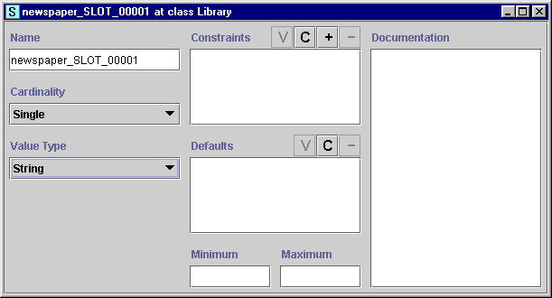

Viewing a Slot
Viewing a Slot

You can view and edit a slot at two levels:
In either case, you can edit the properties of the slot directly in the Slot Form.
See Editing Slot Properties for more
information. Any changes you enter into the Slot Form take effect
immediately. To make the changes permanent, save the project by selecting
Save from the Project menu.

Viewing a Slot at the Top-Level
You can edit the top-level properties of a slot directly from the Slots
Tab or by using the top-level View  button at the Template Slots pane. Editing
at the top-level changes the definition of the slot. The changes appear
everywhere the slot occurs, including the Slots Tab
and all the classes that reference the slot.
button at the Template Slots pane. Editing
at the top-level changes the definition of the slot. The changes appear
everywhere the slot occurs, including the Slots Tab
and all the classes that reference the slot.
To edit the top-level properties of a slot from the Slots
Tab:
- Select the slot you wish to edit in
the Slot pane of the Slots Tab.
- Click the View
 slot button. This opens the Slot Form
for the selected slot.
slot button. This opens the Slot Form
for the selected slot.
To edit the top-level properties of a slot from the Template Slots pane
in the Classes Tab:
- Select a class in the Class
Relationship pane in the Classes tab.
- Select the slot you wish to edit in the Template Slots pane.
- Click the View Top-Level Slot
Template Slot
button at the upper right of the template Template Slots pane
or double-click the slot and make sure View top-level slot is selected
in the Select Slot View dialog box, then click OK.
This opens the Slot Form
for the selected slot. Note that there may be restrictions on the edits that
can be performed on an inherited slot.
Viewing a Slot at a Class
You can also edit a slot at the class level. Class-level
modifications only affect the slot at the current class and its subclasses. To edit the slot properties for a specific class:
- Select a class in the Class
Relationship pane in the Classes tab.
- Select the slot you wish to edit in the Template Slots pane.
- Click the View Slot at Class
 Slot
button at the upper right of the Template Slots pane
or double-click the slot and make sure View slot at class is selected in
the Select Slot View dialog box, then click OK. This opens the Slot Form
for the selected slot. Note that there may be restrictions on the edits that
can be performed on an inherited slot.
Slot
button at the upper right of the Template Slots pane
or double-click the slot and make sure View slot at class is selected in
the Select Slot View dialog box, then click OK. This opens the Slot Form
for the selected slot. Note that there may be restrictions on the edits that
can be performed on an inherited slot.
A slot that has been edited at a class is shown with an override  icon in the Template Slots pane.
icon in the Template Slots pane.
Next: Editing Slot
Properties
Slots Table of Contents